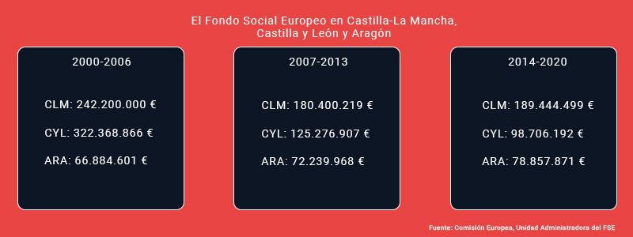

Fondo Social Europeo

Fondo Social Europeo

El Fondo Social Europeo (FSE) es una retribución que apoya a proyectos que tienen su simiente en todo el ámbito europeo y que pertenece a los Fondos de Restructuración de la Unión Europea, sobre todo relacionado con el fomento del empleo entre los estados miembros e invierte en el capital humano del continente. Otro de sus fines es fomentar y promover una mayor cohesión tanto a nivel económico como a nivel social. Sus función es ayudar a los ciudadanos, sean del país que sean y sin importar la edad a encontrar un puesto de trabajo y de integrar en la sociedad a los colectivos menos favorecidos y con menos oportunidades a la hora de ingresar en el mundo laboral. Hay que resaltar que cada año se ayudan a unas 10 millones de personas siendo el montante total de ayuda, si nos situamos en el periodo 2007-2013 de unos 75.000 millones de euros. Uno de los objetivos es la competitividad regional y ahí entra en liza las provincias y comunidades españolas en riesgo de despoblación.
Fue el primer fondo estructural. Hasta la década de los 70 da a los estados miembros el 50% de los costes de formación profesionales y reinstalación de las personas trabajadoras víctimas de reestructuraciones económicas. En el año 1971 se aumentó la cuantía de este tipo de ayuda, por entonces se ayudó a dos millones de personas. En 1983, una reforma de estos fondos provocó mayor concentración en la pelea contra el desempleo. Con el tratado de Maastricht se amplió el alcance de la cuantía. En el período 1994-1999 con el FSE se repartió el 9% de los recursos totales de los Fondos Estructurales y se centraron en el programa ADAPT, con el que se ayudaba a empresarios y trabajadores a anteponerse al cambio industrial.
En la programación 2000-2006, la asignación fue de 60.000 millones de euros destinados a políticas de cohesión. El FSE participó en la financiación de la iniciativa EQUAL, que apoyaba a proyectos innovadores y transnacionales para paliar la discriminación y los problemas que presentaba entonces el mercado laboral. En el periodo 2007-2013 el FSE repartió 75.000 millones de euros destinados a alcanzar los objetivos de convergencia, competitividad regional, empleo y cooperación territorial europea.
En el periodo actual, 2014-2020 el Fondo Social Europeo va a dar una asignación global estimada de 74.000 millones de euros, mil millones menos que en el anterior periodo.
Durante todos estos años, las comunidades autónomas de Castilla-La Mancha, Aragón y Castilla y León han recibido más de 1.400 millones de euros por parte de la Unión Europea dentro de las subvenciones de los proyectos que se han asignado, los cuales siempre han tenido que seguir la estructura de los Programas Operativos creados en cada región, los cuales establecen los ejes proritarios de inversión -a la vez establecidos de manera genérica tanto por la Unión Europea como por el Gobierno español-. Las inversiones han decrecido en este periodo notablemente por causa de la crisis económica.
Los Programas Operativos que determinan el montante de fondos que se destina en cada periodo, en nuestro país han estado divididos por comunidades autónomas, aunque también han existido programas transversales a todas ellas para incentivar otros objetivos como la iniciativa empresarial y la formación contínua o la lucha contra la discriminación. Dependiendo del PIB regional, en cada Programa se calificaba a las regiones en cuanto a unos objetivos prioritarios. En Aragón, entre 2000 y 2006, una parte del FSE fue destinado, prioritariamente, a subvencionar pequeñas entidades sin ánimo de lucro, mayoritariamente, para así generar nuevos proyectos de integración social y laboral. Los programas plurirregionales acababan siendo los que acumulaban mayor parte de la asignación europea para el Estado.
En Europa, las regiones se han calificado siempre según unos objetivos. El objetivo de convergencia incluye a aquellas regiones con un PIB per cápita inferior a la media de los países miembros. Por otro lado, el objetivo de competitividad regional y empleo incluye a aquellas zonas con inclusión gradual, con un PIB per cápita superior al de la media de los países miembros. Castilla-La Mancha es la única región que sigue con el PIB por debajo de la media europea, por lo que en el Programa 2014-2020 sigue configurada como Región de Convergencia.
Durante el periodo actual, tanto el Gobierno de Aragón como la Junta de Comunidades de Castilla-La Mancha, han actuado en pro de la despoblación asignando un conjunto de inversiones para el reto demográfico. Este instrumento, conocido como Inversión Territorial Integrada, sirve para bloquear unos fondos para que solo se puedan destinar a unos objetivos específicos, en este caso, contra la despoblación. Se nutren, por ende, de Fondos Europeos y tienen que ser negociadas con los interlocutores de la Comisión. En España, hasta el año pasado solo había Inversiones Territoriales Integradas en las Islas Canarias, en la provincia de Cádiz y en otros territorios.